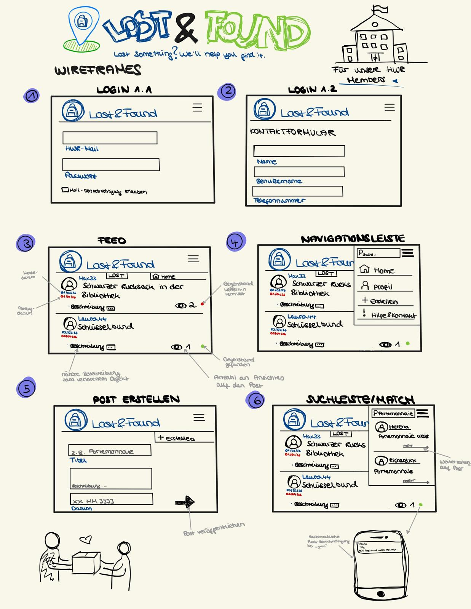

<header style="text-align:center; padding:40px; background-color:#1e3a5f; color:white;">

  

  <h1 style="font-size:50px;">LostAndFound</h1>

  <p style="font-size:20px;">
    Dinge gehen verloren. Lost&Found bringt sie zurück.
  </p>

</header>
